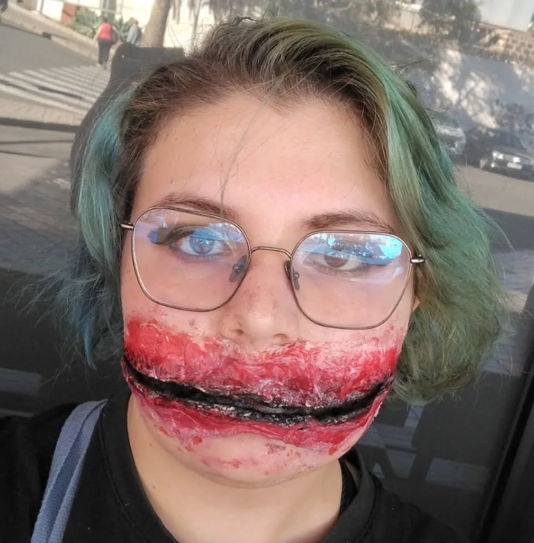

Mis Proyectos

Robótica
En 1ºSMR, durante las prácticas de trabajo, trabajé en un proyecto de la Fundación Sergio Alonso, llamado "Bajo el Mismo Código".
Trataba de enseñarle a los más jóvenes, pero también a los más adultos, los principios de la robótica.
Teníamos una presentación y un script para enseñarle a las clases cómo programar pequeños robots llamados MBots.
Eran códigos muy sencillos, e íbamos metiendo mini retos por el camino.

Maquillaje
Hago cosplay y maquillaje, y me pagan por ello.
Voy por los eventos ofreciendo servicios de maquillaje, para que gente con menos capacidad artística o materiales, pueda completar o reajustar su cosplay.
Como fan de anime y videojuegos, el maquillarme como personajes que me gustan es muy bonito, y más si puedo ganar dinero con ello.

Arte
Aparte de ser maquilladora, me encanta el arte.
Suelo dibujar en digital, pero cualquier tipo de arte me gusta. Esculpir, dibujar, pintar, estampar...
¡Hasta el arte más tecnológico me gusta! La impresión 3D, la animación 3D, etc... Me encantan.